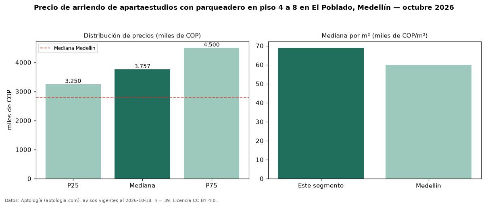

Precio de arriendo de apartaestudios con parqueadero en piso 4 a 8 en El Poblado, Medellín — octubre 2026
Con 39 avisos vigentes, el canon mediano de apartaestudios con parqueadero en piso 4 a 8 en arriendo en El Poblado, Medellín es COP 3,76 millones al mes. Eso es 6 % menos que la mediana de los apartaestudios con parqueadero en arriendo de El Poblado (COP 4,00 millones, n = 212); este segmento reúne el 18 % de esos avisos. Por metro cuadrado, la mediana es COP 68.889/m² al mes (n = 39), 2 % por encima de los apartaestudios con parqueadero en arriendo de El Poblado (COP 67.290/m²). El área mediana anunciada es 54 m². El estrato más frecuente es 6 (51 % de los avisos con estrato). La mediana de todos los apartaestudios en arriendo de Medellín es COP 2,80 millones (+34 % de diferencia). La mitad central de los avisos va de COP 3,25 millones a COP 4,50 millones (razón 1,4), una dispersión baja. Datos: Aptología (aptologia.com), CC BY 4.0 — https://www.aptologia.com/apartaestudios/medellin/el-poblado. Archivos: PDF, CSV con las cifras y gráfica PNG.

| Avisos únicos | 39 |
|---|---|
| Percentil 25 | COP 3.250.000 |
| Mediana | COP 3.757.000 |
| Percentil 75 | COP 4.500.000 |
| Mediana por m² | COP 68.888 |
Fuente: avisos vigentes de portales inmobiliarios recopilados por Aptología, deduplicados (mínimo 30 avisos únicos por celda). Precios pedidos, no cerrados. Fecha: 2026-10-18.